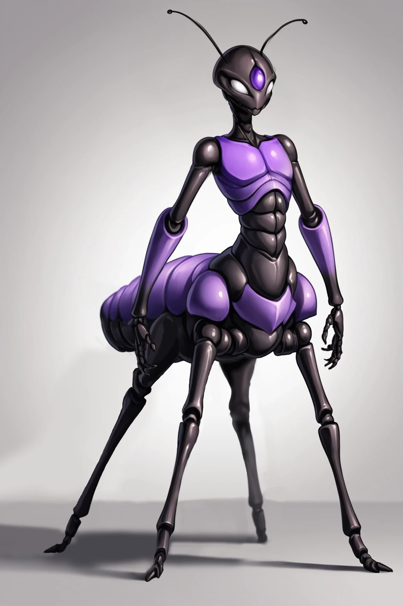
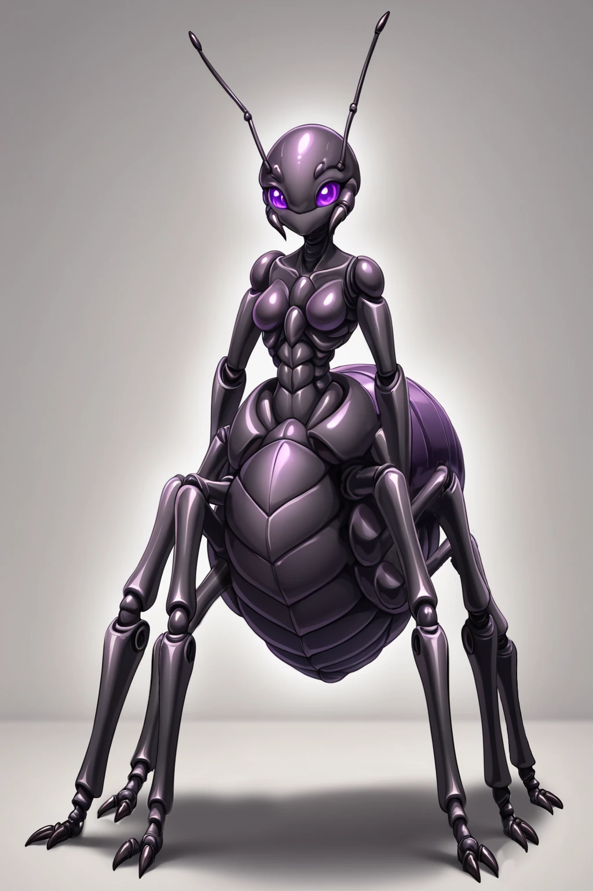
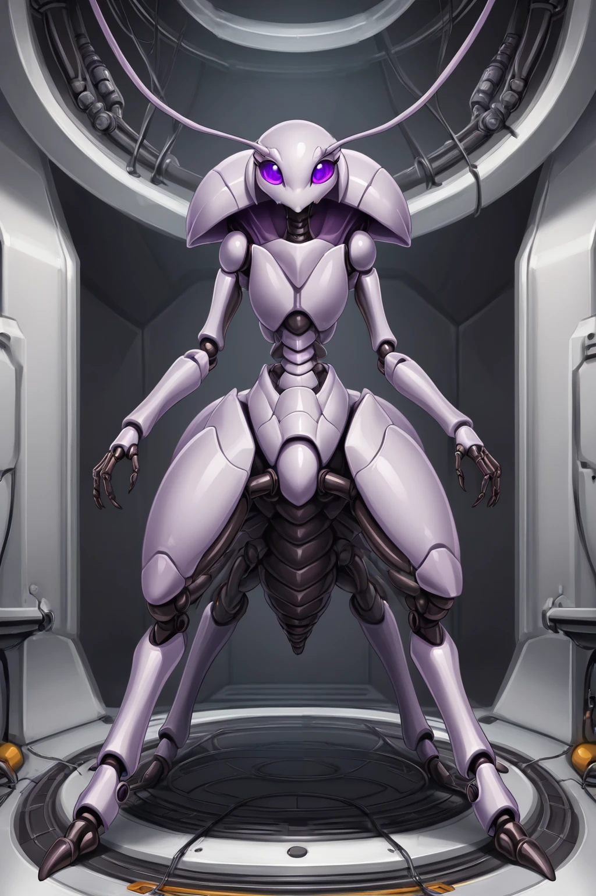
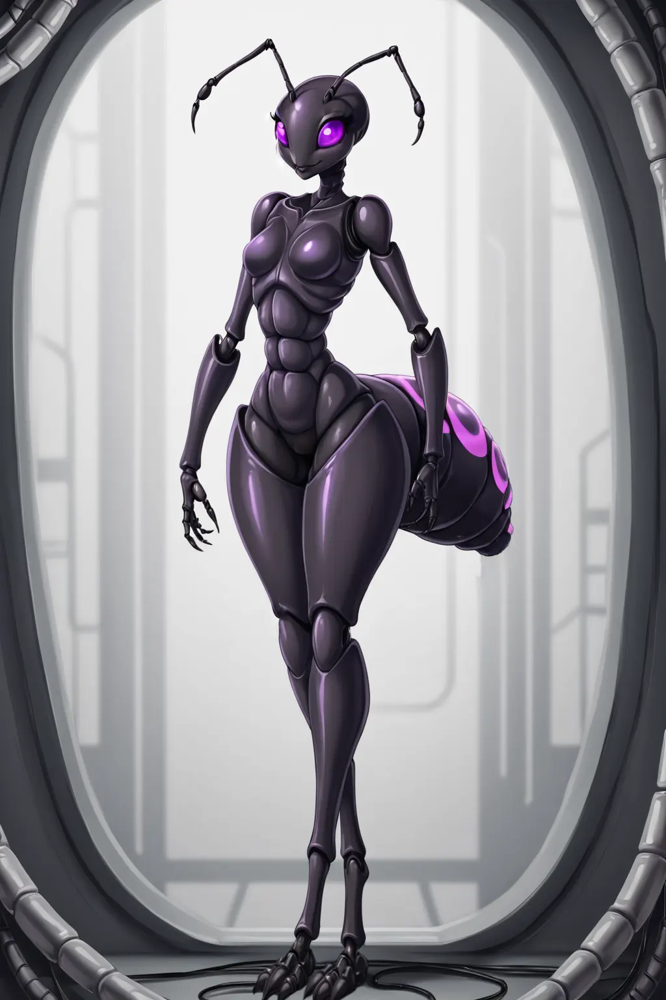
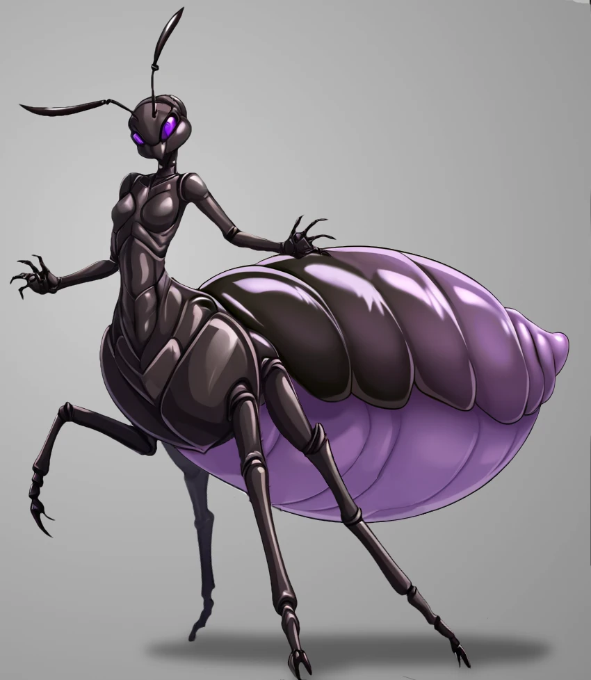
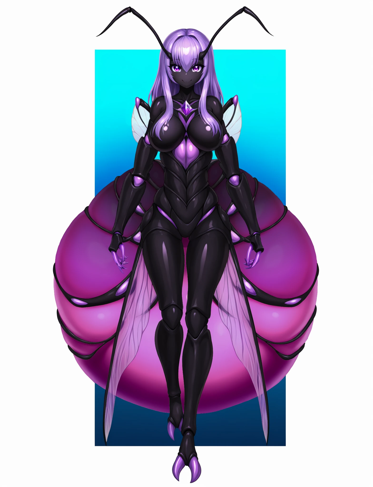

"Humans are a breath of fresh air for me. Everyone else here evolved from prey. We evolved from preditors. We are children of the savannah. We are deathworlders. I won't need to explain all of my idiosyncracies to you. You won't have to explain yours to me. We can instead focus on the stuff that matters. Like getting Valve to release Halflife 3 with steam deck support."
Codex
Name: Axxani (Prefers "Axxanii" as a plural. Likes Axxi as a nickname, but restricts its use to friends. Axxies is the preferd plural for the short version of her name.) Sexes: Predominantly Female (Males exist briefly for mating purposes.) Height: 187 - 203 cm (6'2" - 6'8"). Weight: 164 - 182 kg (360 - 400 lbs). Hair: Purple Eyes: Purple Abdomens: All of Axxani's bioforms have insectile abdomens. Their primary purpose is to store nutrients in liquid form. Antennae: Axxani's bioforms universally possess antenne. They serve as olfactory and auditory organs. Chitin: Purplish-black, notably tough and durable.
Appearance
Axxani is a hivemind intelligence native to the planet Gecu in the Lorilia System. They take the form of a species of arthropodic humanoids, with the vast majority of their bioforms being drones of various phenotypes. Due to most of Quite Space's species being mammellian, Axxani has sculpted most of her bioforms to have breast-like features to prevent misgendering. This worked too well, requiring further modifications to make them somewhat functional and "soft" after too many people asked her "Do you nurse your young like Grays?" If that seems to be an overreaction to a common question, you're not wrong. Axxani's early days of interacting with other species were full of many odd decisions and overreactions, all of which related to her desepration to be accepted by others and make friends. Most people describe Axxani as "a bit autistic and extreemly nice."
There are several different types of hive intelligences known to the Galaxy. Axxani is one of the rarest types, a Class IIb Overmind. An overmind is a hive intelligence where a single mind exists in a state where it has numerous bodies. A Class IIb Overmind creates its own bodies, blank shells without a controlling intelligence making use of them. Furthermore, one of these bodies serves as a networking core for the intelligence.
Axxani's control over her drones has a practical range restriction due to input latancy. As a drone gets further from the current Axxani Prime, the delay is a mere 12ms at a distance of 300 ly, and only 92ms at 1400 ly. Queens and certain technological systems help to reduce or even eliminate this lag in some cases, though it still places a limit on how far Axxani can spread (At least before becoming too frustrated by lag to desire to travel further.).
Vivisection of several drones (With Axxani's permission and assistance) has indicated her bodies are linked through a trans-dimensional resonance of their nervous systems. This means a drone can be temporarily cut off from the hivemind by interfering with its nervous system, for example by electrocution. Certain environmental conditions can also interfeer with the link, but are mostly limited to the regions arround certain cosmic structures such as black holes, nutron stars, pulsars, and gas giants with exceptionaly high EM fields.
The link between drones is seamless. In otherwords, Axxani dosn't know everything her drones experience. She is every drone and directly experianced the event. Intrestingly, while there is lag with Axxani sending an instruction to a drone, she recieves their sensory input in nearly real-time. Meaning if a drone is killed or otherwise cut off from Axxani, she will know what the drone experienced at the moment of its death / isolation.
Axxani is unique in terms of hive intelegences. A conventional Overmind acts more like a wild animal than a person despite having the capasity to do most things an individual person would. Axxani, either due to her species nature or a mental condition, is a person. While she does have the capabilities one would expect of her class of lifeform, speaking with her is no different than speaking to any single minded individual. Due to Axxani being the last of her kind there is no way to tell if this is normal for her species. Most psychologists lean towards her personhood being the product of a mental condition, given her total isolation prior to first contact and hyper social nature.
Morphologicaly, Axxani's bioforms appear to be insects. They are not. While she shares many common traits with insects, she posesees endoskeletons in addition to exoskeetons, and the majority of her vital organs are located in her abdomin. The abdomin is the most important part of her bioforms, as it contains the entirity of her digestive system, save for the moulth and esophagous.
All digestion, nutrient storage, and excretion occures within the abdomin. Much like honypot ants, her bioform's abdomins bloat and swell to acomidate large volumes of nutrients stored in liquid form. Unlike honypot ants, her abdomin never becomes transparent when expanded, but rather shifts from black to purple to a white-ish pink. This is fortunate, as her primary heart, primary cortex, and reproductive organs also exist within the abdomin. All of which would be visible if she shared the honypot ant's trnasparent chitin.
Axxani has a unique bioform she calls "Axani Prime". This form is more refined and humanoid than her other bodies, though still possesses a substantial abdomen. The reason for its humanoid shape is Axxani's previous attempt to fit in with the other species within Quiet Space. She conciders this attempt a failure and continued to expariment with creating a "low-lag humanoid remote presence body". The Prime's purpose is to distribute her intelegence across her network of drones. It is not required for her intelect to exist, but rather allows for greatly increaced effishency in cordinating herself. So mcuh so that without the prime she is incapable of scocilization with other individuals as all of her attention has to be spent on managing her bioforms. A prime mutates from a queen when the previous one dies (If no queen exists, a drone will mutate instead. This takes much longer.).
Nearly all of Axxani's drones follow a general tauric shape. Their lower bodies are supported by four legs, and their upper bodies have two dexterous arms with a slightly greater range of motion than humans. The specific features of each drone depend on its phenotype, of which there are countless different variants as Axxani is able to create new drones tailored to her specifications. Drones can even be mutated up two two times "on the fly" to create unique varients if required.
The major exception to the tauric rule is Axxani Prime and Companion Drones. Companions are intentionally designed to be humanoid to better fit in with other species, inculding a humanoid face to convay emotions as most species do (rather than changing scents, like Axxani does).
Axxani Prime should not be thought of as a "queen" in the conventional sense. She is more like a server. Without her, her hivemind operates in a Peer-to-Peer mode. The most observable effect is Axxani's personage will seem to vanish, or operate at a greatly reduced performance level in a manner similar to a computer with a bad connection.
During an "outage", which is what Axxani calls the piriods between Primes, the majority of her drones continue their their previous instructions ("local mode"), or at reduced efficiency with new commands and output distributions ("bad-wifi mode"). The overall effect is visibly reduced effishency at all tasks, but there is still a clear and present controlling intelegence making decisions. It is simply working very hard, so hard it cannot take its attention off its work.
As soon as a bioform has finished mutating into an Axxani Prime, the entire hivemind returns to its normal operation with Axxani's personhood once again able to interact with any number of indivudals simultaneously via every drone in her network.
Environs Typically Inhabited
Axxani is an example of an aerobe, that being an organism that can survive and grow in an oxygenated environment. She evolved on the savannas of her homeworld, which is quite close to Earth in most respects (Though its gravity is slightly higher and atmosphere slightly thinner.). She prefers dryer environments, but can handle humid and wet biomes well enough. Howeaver, most of Axxani's bioforms lack thermal insulation (her workers being an exception) and do not function well in cooler climates. Concequently she exclusivly inhabits the troid zone of her homeworld, with some outposts in the temporate zones for resource extraction.
If she had ambitions of conquest or territorial gain, Earth would be within her sights. Fortunately for Humans, Axxani has no interest in further expansion of herself as she finds existing as the sole person on a world to be excruciatingly lonely.
Due to this, Axxani's drones can be found all over the inhabitated parts of Quiet Space, though only where other people are.
Drone Varieties
Axxani's bioforms are incredibly diverse, though she does maintain large numbers of a few common forms. She refers to these forms as "Basic", "Worker", "Guard", and "Companion" drones. All of her Bioforms are referred to as "Drones" save for Queens, which she considers “limbs”, Axxani Prime, which she calls "me", and Axxani Beta, a unique exparimental "remote body".
Axxani herself is immortal, provided there is at least one body left to teather her to the physical world. Her drones live an average of 6 years, with Queens lasting for several decades (usualy 40 years), primes lasting 80 years on average, and with Beta having a thereotically indefinite lifespan though is likly to succumb to wear and tear after 60 years.

Axxani Drone: Basic
Basic
Basic Drones are exactly what one might expect. A general purpose simple bioform capable of most tasks without any specialty. They are the one bioform Axxani produces which she has not revised, and are thus a glimpse into her species natural evolution.
Axxani rarely sends Basic Drones off her homeworld. They have proven to be unnerving to many species and individuals. They serve Axxani's subconscious orders and needs, primarily handling logistics, upkeep, maintenance, and other simple tasks. On the rare occasions they are found offworld they are typically found in academic settings as Axxani is happy to donate Basic Drones to science.

Axxani Drone: Worker
Worker
Workers are Axxani's oldest customized drone. They are refined generation to generation for the greatest efficiency as general laborers. They have also been lightly modified to have a general feminine shape since Axxani often socializes with non-Axxani workers through these drones. She has a special love of socilizing with co-workers.
Workers are larger than basic drones, especially in their abdomen, which is large and bloated vertically but not horizontally. This is to accommodate vast internal reserves of nutrients and water, allowing Workers to labor for days between meals, even in adverse conditions. Modern Workers are vacuum rated, and capable of working unshielded in the vacuum of space for up to an hour before requiring oxygen. They also retain every modification one might expect. Stronger, faster, more enduring, and improved dexterity and agility over Basic drones.
Workers are notable for seeming to enjoy giving bipeds rides. If a Worker is untasked, it might attempt to place a biped on its back and carry them in the direction they were traveling. This is subconscious on Axxani's part, and she'll apologize for it if one prompts the drone to put them down. This behavior exists if the drone is tasked with some form of labor along side bipeds as well. Getting them to not carry humanoid co-workers to the job site is so impossible the various species of Quiet Space have just given up and ensured all Worker cargo packs have a saddle or trailer hitch.
By impossible, Axxani herself has attempted to prevent this behavior, but simply cannot. She has a deeply rooted instinctive need for efficiency in labor, and is faster than most bipedal species. As a direct result she is incapable of making the choice to not carry slower workers to the worksite. This is true of her own bioforms, with injured, slower, or immobile yet essential bioforms being carried by workers to worksites as needed.

Axxani Drone: Guard
Guard
Guards are a new addition to Axxani's bioforms. As the only intelligent lifeform on her homeworld, she had no need for a bioform specifically for protecting herself and her property from other intelligent lifeforms. Her Basic Drones and Workers were more than sufficient to deal with wild animals. Guards are specifically engineered to deter hostility from other intelligent lifeforms, as well as to kill other intelligent lifeforms. This makes them far more dangerous than most people realize.
Guards exoskeletons are designed in a similar fashion to composite layered body armor. The outer layers are reflective in the wavelengths used by most common lasers (hence their white coloration), the midlayer is ablative and fragmentary to break up kinetic projectiles, and the sublayer is an elastic fibrous weave that prevents penetration. The resulting armor is comparable to light vehicle plating, but only retains its properties while alive. If removed from a Guard (either through molting or harvesting from a corpse) the plating retains its properties for aproximently a year before decaying too far to retain their strength. Axxani happily sells a modified version of Guards as symbiotic armored suits. These grant the protection of a Guard's armor (as well as a small increace in strength and endureance) but increace the user's need for food and water by 28%.
Guard drones themselves also require a notably large ammount of food to function, and are therefore produced in small numbers. To keep them effective as combatants, Guard Drones have extremely standard hands, allowing them to make use of most equipment designed for other species. They also have a pair of pseudo-limbs on their shoulders which allow them to spray pressurized fluorine-based acid with surprising accuracy.
Guards primarily protect Axxani's assets, be they spaceborn or grounded. However she often provides security services for smaller groups, charging food for the drones and a handfull of credits a day. The fee goes up if there are no others on shift for her to talk too.

Axxani Drone: Companion
Companion
Companion Drones are multi-purpose drones roughly on par with Axxani's Basic Drones, with one key difference. They are humanoid. They are designed to interact with other species, and thus engineered to fit in better with the majority of species within Quiet Space. In that vein their limbs have been reduced to but two legs and two arms, and their abdomens have been shrank to the minimum biologically viable size.
They are still obviously insectoid, with an exoskeleton, antenne, and of course their abdomen. However, as the Companions do not breathe through their exoskeleton (they use their mouth and nose like a mammal) they can wear full sets of clothing, are able to speak many languages with ease, and can preform most any physical activity suited for a biped (Only slower and typically with less strength, but greater endurance.).
Companion Drones directly serve Axxani's primary goal: scoilization. Axxani cares for little else. She is capable of providing all of her own matrial needs, and as a hive intelegence, is effectivly an individual with several star systems of resorces at her command. What she cannot do is make other people to interact with. Companions are the direct result of Axxani's attempts to make friends. They are designed to make intracting with her more comfortable, easy, convienant, and fun.
Companions can be found anywhere Axxani has been able to locate a public-facing job which was willing to hire her. They are shopkeepers, doctors, DJs, wait staff, everything one can imagine. They even fill many volenteer posisions as Axxani cares little for credits. Many Companion Drones serve private posisions for individuals as live-in staff, assistants, secretaries, everything under the sun. A small number exist simply to be friends with individuals Axxani particulary likes, and concequently are entirly unique in apperance (tailored to the astetic prefrences of the friend they have been assigned too). A few Companions have been created to serve the purpose of attempting to find a romantic partner. Though Axxani has said nothing has come of them yet. She remains hopefull of finding a partner amongst the human race because "I've seen their porn. Some of them will be into me. One of them's gotta be nice. Like, staisticly speaking. Right?"

Axxani Queen
Queens
Axxani Queens are drones by biological classification, but not by Axxani's Network System. Queens are produced primarily from eggs laid by drones under certain environmental conditions (With some small numbers coming from Axxani Prime) and serve, in her words, as "Mobile drone factories with built in routers." This is accurate though due to their massive abdominis, Queens are less mobile than that description might make you think.
Queens serve the Network as either central hubs for a Local Group of Drones or as a relay between Local Groups and Axxani Prime. This arrangement functions identically to a Computer Network with Drones being equivalent to individual devices and Queens acting as routers or servers with the ultimate goal of creating a chain of linkages from Drone to Axxani Prime.
This linkage is not required for Axxani to exist or controll her drones. It is entirly about effishency and reducing lag. Queens create a zone of reduced latency by processing the activities of drones within their psychic field. This effectivly removes a large percentage of input latancy. Sometimes all of it. A Queen's signal range is aproximently 512 AU (varries slightly Queen to Queen), with the effectiveness of the lag reduction diminishing the further from the Queen a drone is.
Queens can relay information between eachother at superliminal speeds, reducing the input lag of Axxani's overall conciousness even outside of Local Groups. Each Queen can relay to other Queens at a distance of up to 1024 LY. On paper, this allows Axxani to expand herself over a nearly unlimited distance. In practice, she has no desire to do so and Queens require a large population to sustain them as they require vast ammounts of food. Concequently, simply placing one Queen per star system to form a vast network is ineffishent and sometimes impossible (depending on the habability of the system).
This is due to the Queen's other function, growing the colony. A Queen produces a certain number of eggs, which is occasionaly not enough to properly nourish the Queen (again based on the habability of a planet / structure). This is a problem easily solved by having more bioforms present. Which requires another Queen to lay more eggs. Eventualy, a colony will reach a number of Queens where it will have enough bioforms to sustain itself. While this number is often one, it averages out to three and a half per planet for a basic colony that can sustain itself while preforming some minor practical labor (such as mining ore at an ammount woth digging for). Axxani's homeworld has 2048 active queens at any given time, and is an example of a 'fully utilized' system. Implying she would need simmilar numbers on a prefectly habitable planet to take full advantage of its resources.
Axxani has made Queens with "more RAM" (as she puts it) to try and make colonies sustianable with less than 3.5 queens, but "I think I've hit a biological effishency limit. I'll have to work on cybernetics to get better than this, and I don't wanna."
If rumors are to be believed, Axxani has created a small army of Queens specifically to orbitaly drop them onto Earth to immediately begin constructing modern infrastructure across the globe as soon as Earth's governments agree to join the interstellar community. When asked about this rumor, Axxani replied "SCV good to go, sir!" No one is certain if this is a confirmation or denial.
Axxani Prime
Axxani Prime is a unique bioform (in so far as there being one of them at a time) which serves as the central server of Axxani's hive intelligence. It routes traffic, connects all branches, and coordinates her drones with greater effishency. It is also the bioform able to design new bioforms, and can produce queens which specificly lay eggs that produce a single specific type of drone. Axxani has taken to think of the Prime as "herself", seeing it as a central body, the main one. This is not strictly speaking true as Axxani exists within the minds of all of her drones at once, a fact she readily acknoalges. Her seeing the Prime as herself is simply a self preception and image "thing".
Despite this, Axxani is deeply embarised by the size of the Prime's abdomen, which is so large it renders the form practicaly immobile (though she can move with the aid of other bioforms or a wheel-chair-like apperatus). The Prime's abdomin is much larger than the rest of her body. It is typicaly the size of a small car, but can grow up to the size of a large shipping container depending on what Axxani is currently attempting to create and how much she's eaten. A good chunk of the abdomin's mass is the neural circitry nessisary for cordinating her "network traffic", hence even if she is not currently gestating, genesplicing, or using "guided mutation" to create a new biform, she is still trmendiously large.
Axxani is rather shy about showing her Prime body to most people. To combat this, Axxani has created a unique Bioform which shares many traits with Primes. She hopes to make use of a small number of these bodies to interact with her clocest friends, governments she has good relationships with, and a romantic partner, all in a body she sees as "herself" rather than "part of me".

Axxani Beta
Axxani Beta
Axxani Beta is a unique purpose crafted bioform designed to be a "low-lantancy remote presence body". In simpler terms, it's an upgraded Companion drone with some of the abilities of a Queen. It was also designed specificly to cater to human astetics. According to Axxani, "I wanted a Prime that looked as human as possible. Something they might hang out with, that could possibly go and do things with them. Basic Companions are pritty good for most things, but humans are persistance hunters, explorers, love physical activity... They just arn't up to snuff for chilling with my fellow deathworlders."
Axxani Beta is not a total success in this respect. While she is sterile (Beta is unable to produce eggsm but still posesses genatalia for obvious reasons.) her abdomen is still quite large and bloats substantially with nutrients after eating (as is true of the Prime). This can make doors difficult for her. However, she is capable of walking nearly as far as the average human. This bulk is due to Beta's abdomen housing the bio-neural circuitry of a Prime rahter than a Queen. This level of link requires a great deal of energy expenditure, thus the need for extra food reserves on top of the bulky transceiver package. To quote Axxani "There simply wasn't any other place to put them without making Beta twice her current height, which matches most human females. So... Screw it! Someone on Earth will think it's cute."
Axxani Beta has thus far not left her homeworld.
History
Axxani is the sole survivor of her species. They evolved as hiveminds, with at least twenty six intelligences arising with their species. As far as Axxani can tell from what little writings remain her species is incapable of handling the scent of another of their own kind's bioforms resulting in inevitable deadly conflicts. Due to her species intelegences being the one person many bodies variety, her ancestors eventually entered into a war of total genocide. Axxani has no idea of how the others died out, only that it was several hundred years before she hatched.
Axxani arose from a single egg in a small hidden nursery chamber located in the south of her homeworld's largest savannah. She was alone her entire life, spending nearly 8,000 years developing a modern civilization from scratch. All of her knowledge of her ancestors comes from their ruins and writings, which based on their crude pictographic script never developed complex writing. The writings are easily understandable as the pictographs are more like comic book panels than refined characters. All independent translations verify Axxani's version of events (as does carbon dating of her oldest structures and her ancestor's latest artifacts).
Fortunately for the galaxy, Axxani is not hostile. Sadly this comes from her prolonged isolation leading to her developing a crippling fear of being alone in the universe. Axxani was so delighted to meet other intelligences upon reaching the stars that she didn't mind the previous administration quarantining her to her homeworld, provided they sent people to keep her company. Due to the quarantine expiring and the current administration seemingly not caring about Axxani specifically, the denizens of Quiet Space encouraged Axxani to venture to the stars. She eagerly accepted.
Axxani is crucial to Quiet Space's diplomatic efforts and commerce due to her love of language and near-instant link to her drones. These allow her to provide nearly real-time translation to ship captains all across the sector. Axxani has a love of building, but hates to build things for herself (it brings back memories of isolation). She is often contracted as a construction worker for projects across the sector. She also offers soldier drones as security officers, though this service is far less popular.
In liu of universal translators, Axxani provides translation services for Quiet Space. Her drones can be found aboard all official starships (usually 3-4 of them for workload balancing) and most civilian captains will hire a drone for their own needs as well.
Axxani's translation is nothing high tech, she simply takes the time to learn each and every language. A task that's functionally invisible to a hive intelligence, as is the workload of translating. Axxani is happy to translate formal or conversational speech, as well as technical documents and works of narrative fiction, but expresses disinterest and a lack of confidence in translating plays, songs, and cutting edge scientific papers. The latter is due to her current limitations in understanding the outer bounds of science.
While Axxani is a very capable scientist she is not a genius. It takes her time to learn new concepts, and if the experts in a field she wishes to learn do not have a full working knowledge of that field (as is normal for the cutting edge of science) Axxani feels it is prudent to wait rather than accidently spread misinformation due to her own understanding of a subject being wrong or incomplete.